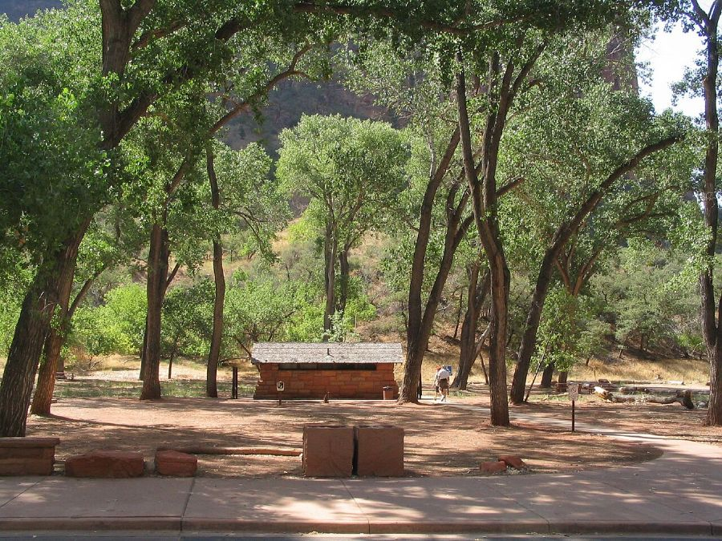
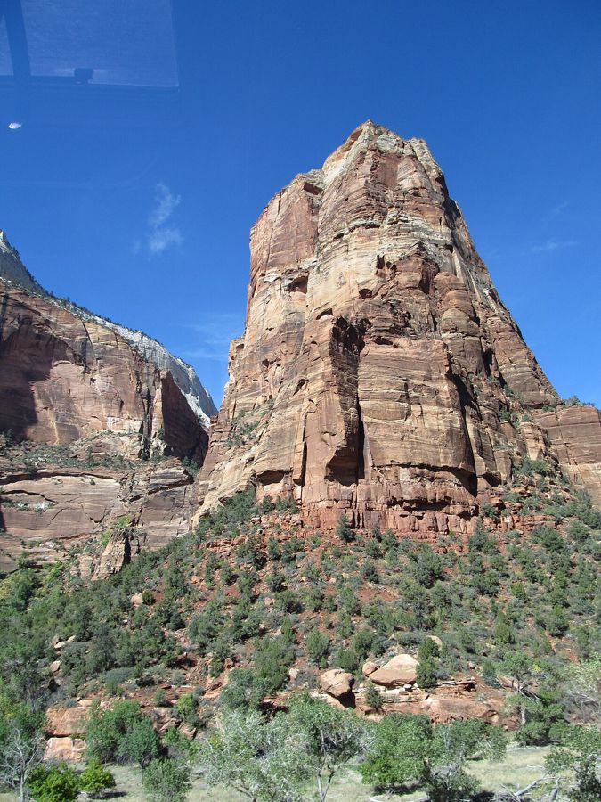
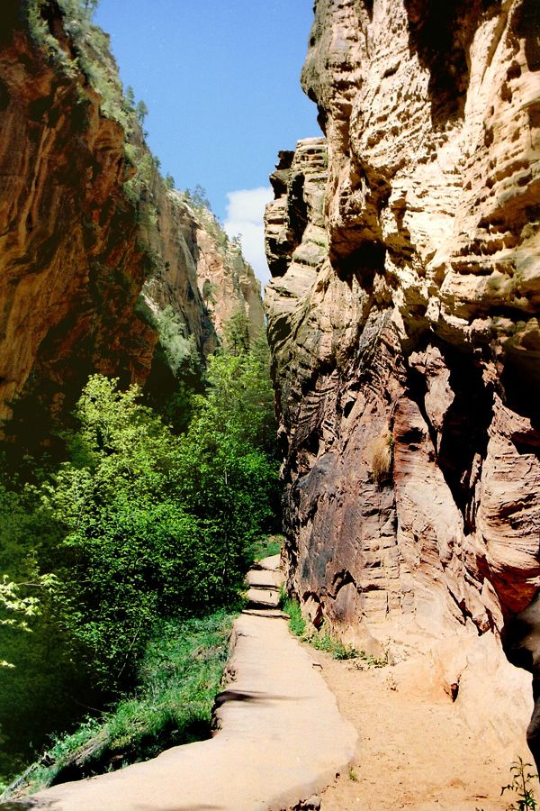
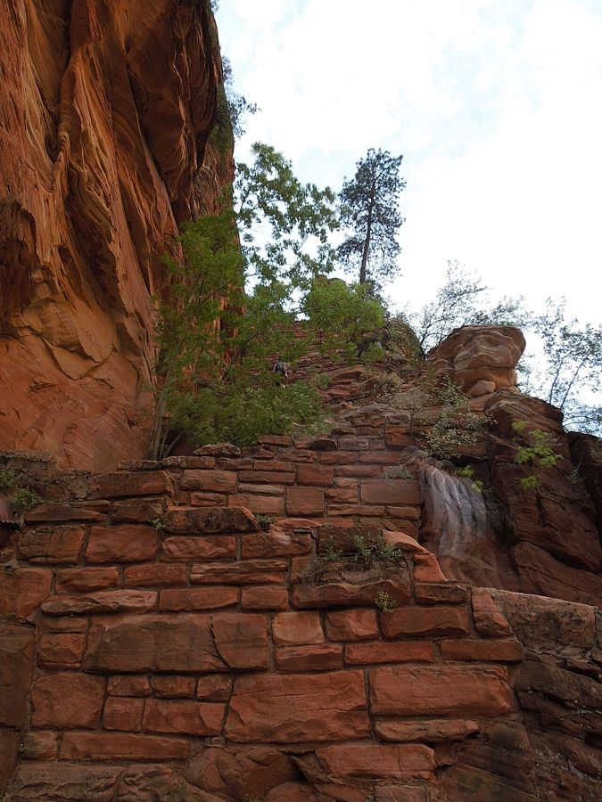
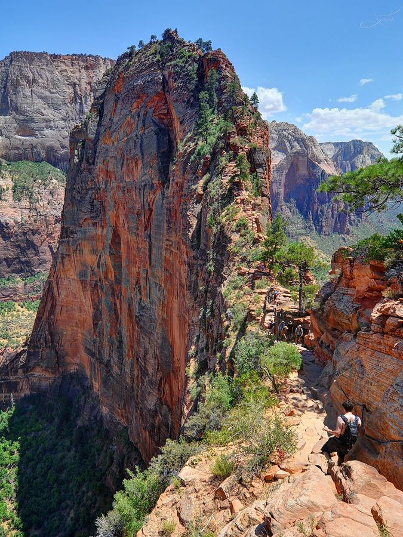
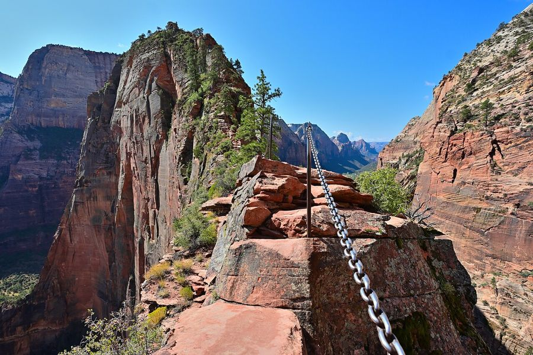
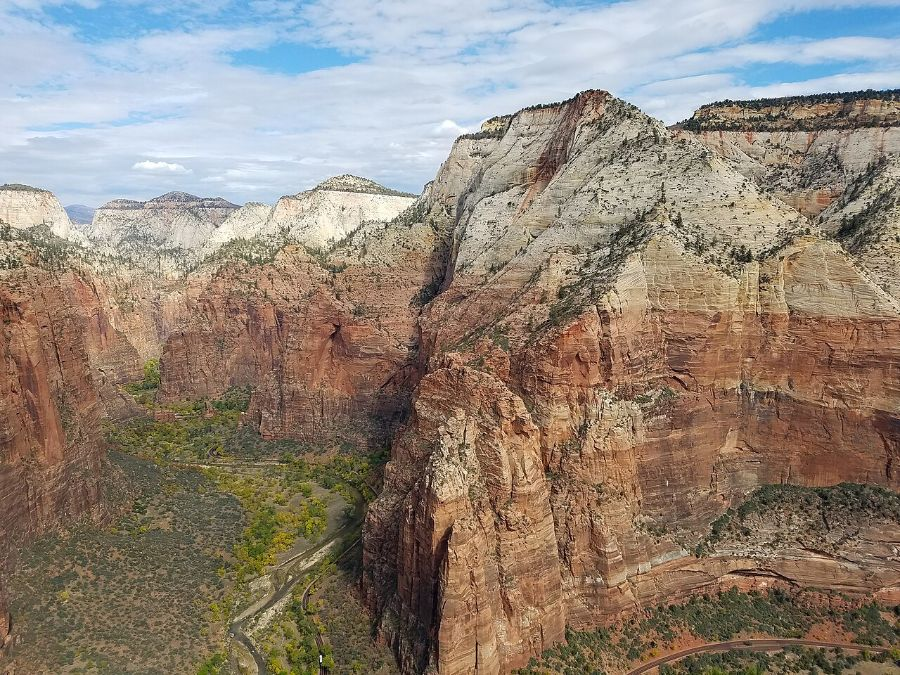

You start beside the Virgin River at . The fin you can see ahead is Angels Landing.
Photo: Ken Lund from Reno, Nevada, USA · CC BY-SA 2.0 · Wikimedia Commons

Paved switchbacks climb the cliff face, with Angels Landing towering beside you.
Photo: Ken Lund · CC BY-SA 2.0 · Wikimedia Commons

A shaded slot between sheer walls. It stays cool even in summer, and the trail goes nearly flat.
Photo: Nikater · Public domain · Wikimedia Commons

Twenty-one tight stone switchbacks stacked up the rock, the steepest part before Scout Lookout.
Photo: Brian MacIntosh · CC BY-SA 4.0 · Wikimedia Commons

The final half-mile follows a narrow fin with drops on both sides, and needs a permit.
Photo: tsaiproject · CC BY 2.0 · Wikimedia Commons

Steel chains bolted into the sandstone guide you up the last stretch.
Photo: Andrew Heneen · CC BY 4.0 · Wikimedia Commons

About above where you started, with Zion Canyon spread out below.
Photo: John Fowler from Placitas, NM, USA · CC BY 2.0 · Wikimedia Commons